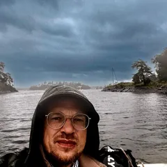
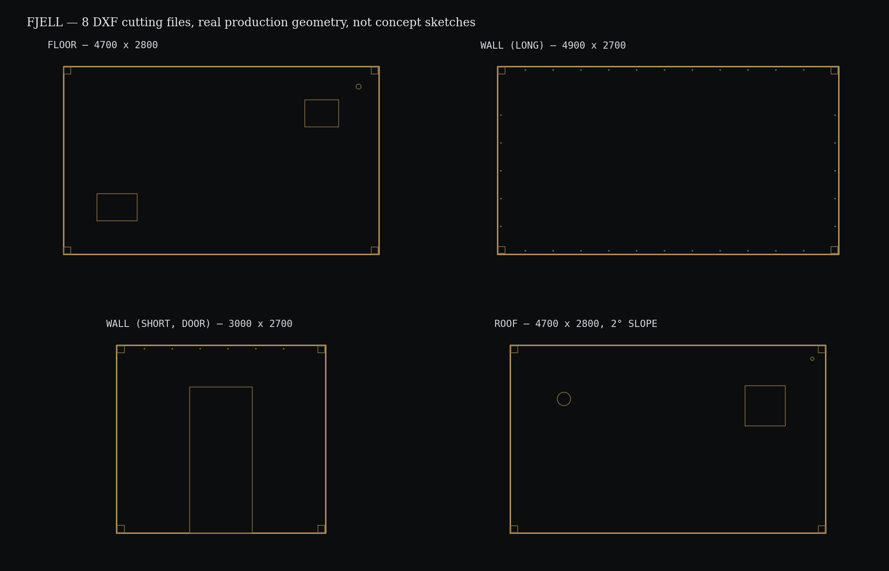

Sandvika / Bærum

Hage, uterom og håndverksarbeid, basert på faktisk erfaring
En hage har sin egen orden — hva som må vokse før det kan beskjæres, hva et veksthus trenger før spirene møter verden utenfor, hvilken sesong en hekk faktisk tåler å bli rørt i. År brukt innenfor den ordenen: eiendommer i Hampstead Heath, noen århundrer gamle, balkonghager over byen, golfbanene i St Andrews. Egne oppdrag, og arbeid gjennom større anleggsgartnerfirmaer — alltid den samme respekten for det som faktisk lever, ikke bare det som ser ferdig ut. Den samme respekten kommer til din hage.
Hage & uterom
Beskjæring
Busker og hekk, riktig tidspunkt for arten — feil sesong kan skade planten mer enn det hjelper.
Gressklipping, resåing og luking
Klipping, reetablering av slitte/tynne plener, luking — riktig frøblanding og timing for norsk klima.
Planting og sesongrydding
Vår- og høstrydding, planting, generell rådgivning om hagen.
Gjerder og terrasser
Reparasjon og vedlikehold av gjerder og terrassebord.
Bygg & innendørs
Dør og vindu
Montering og reparasjon.
Fasade og betongarbeid
Mindre fasadearbeid og betongjobber.
Parkett, listverk og gips
Legging/reparasjon av parkett, listverk (trim), gipsplater og lettvegger/partisjonering.
Select a tool.
Vedlikehold
Høytrykksspyling
Fasade, terrasse, gårdsplass.
Rensing av takrenner
Bruker gjerne din stige.
Båt
Reparasjon
Dekk, tremverk (teak), mindre struktur- og epoksyarbeid.
Rengjøring, forbehandling og maling
Skikkelig forbehandling før maling — dette er ofte det som avgjør om jobben faktisk holder.
Praktisk
Naturen jeg jobber i
FJELL — modulær 12m² hytte
Egen hyttedesign — full ingeniørplanlegging, ikke fysisk bygget ennå
Komplette byggetegninger (DXF/STL) for en modulær 12–15m² hytte er ferdig tegnet. Det som gjenstår er det faktiske byggetrinnet — ærlig sagt, ikke en ferdig vare ennå.

Samme hender: hagen din, et hyttesett, en båt som krysser havet. Én håndverker. Lik ærlighet.